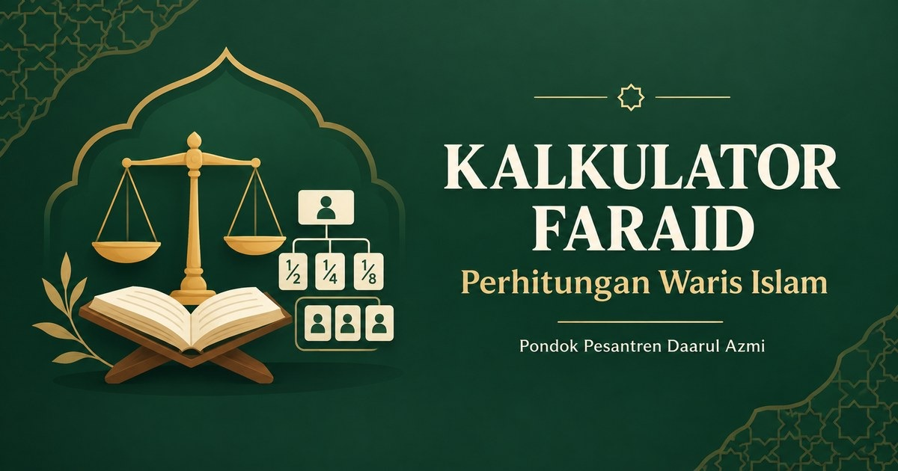

WARIS ISLAM · ILMU FARAID
Pembagian waris,
jelas dan terperinci.
Masukkan harta bersih dan ahli waris yang masih hidup. Pelajari dasar bagian, proses perhitungan, dan hasil simulasi dengan transparan.

Hasil bergantung pada kelengkapan data keluarga, status kepemilikan harta, utang, wasiat, dan kaidah yang digunakan. Kasus nyata perlu ditinjau ahli faraid/ulama kompeten; untuk konteks hukum Indonesia, periksa pula ketentuan yang relevan dalam KHI.
LANGKAH 01
Data pewaris
HASIL SIMULASI
Ringkasan pembagian
TRANSPARANSI
Bagaimana dihitung?
LANDASAN & CATATAN
Dalil dan ruang lingkup
Ketentuan bagian anak dan kedua orang tua.
Baca ayat di Quran NU Online ↗Ketentuan bagian suami, istri, dan saudara seibu.
Baca ayat di Quran NU Online ↗Ketentuan saudara dalam kasus kalalah.
Baca ayat di Quran NU Online ↗“Berikanlah bagian-bagian warisan kepada yang berhak; sisanya untuk kerabat laki-laki terdekat.” (HR. Al-Bukhari no. 6732 dan Muslim no. 1615)
Baca terjemahan hadis ↗ · Riwayat Muslim ↗Kalkulator ini hanya simulasi edukatif untuk kasus terbatas dengan pasangan, anak, ayah, dan ibu; bukan penetapan pembagian waris. Mesin belum mencakup semua kondisi hijab, 'ashabah, 'aul, radd, Umariyyatain, kakek bersama saudara, dzawil arham, ahli waris pengganti, kehamilan, beda agama, pembunuhan, harta bersama, wasiat wajibah, serta pengecualian lain. Hasil, kaidah mazhab Syafi'i, dan pembulatan nominal wajib diverifikasi ahli faraid/ulama kompeten sebelum dipakai pada kasus nyata.